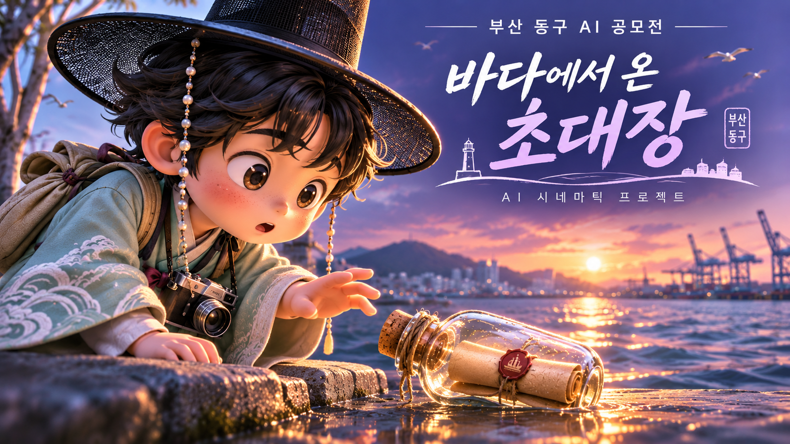

FEATURED ACHIEVEMENT / 2026
영도 봉산마을
관광 콘텐츠 제작
제작지원 사업 선정부터 기획, 현장·드론 촬영, 롱폼·숏폼 편집까지 전 과정을 수행했습니다.
PROJECT FUNDING200만 원
관광 콘텐츠 제작지원 선정
DIRECTOR’S STUDIO / EXPERIMENTAL CUT
장면을 만들고, 감정을 설계합니다.
기획부터 마지막 컷까지 직접 완성하는 크리에이티브 스튜디오.
MEET THE CREATOR / 2026
생각을 장면으로, 장면을 이야기로.
30초에 담아낸 저의 크리에이티브 여정입니다.
DIRECTING · FILMING · DRONE · EDITING
봉산마을 관광 콘텐츠 제작지원
짱구 팝업스토어 릴스 조회수
기획 · 촬영 · 드론 · 편집
01 / DIRECTOR’S SELECT
세 개의 장면으로 만나는 MINZ의 시선.
프로젝트를 선택하면 대표 장면과 제작 이야기를 확인할 수 있습니다.

FRAME 01 / 03AI / CINEMATIC STORY
어린 선비의 시선으로 부산 동구를 여행하는 AI 시네마틱 스토리.
기획 · 촬영 · AI 연출 · 편집
02 / SELECTED PROJECTS
아이디어를 실행 가능한 결과로.
실제 프로젝트와 콘텐츠 성과를 보여줍니다.
03 / PRODUCTION EXPERIENCE
기획부터 결과까지, 현장에서 쌓아온 실무 경험과 활동입니다.
FEATURED ACHIEVEMENT / 2026
제작지원 사업 선정부터 기획, 현장·드론 촬영, 롱폼·숏폼 편집까지 전 과정을 수행했습니다.
관광 콘텐츠 제작지원 선정
YouTube 채널 운영과 지역·브랜드 홍보영상, SNS 숏폼 기획·촬영·편집
부산 맛집·핫플·지역 정보 콘텐츠와 브랜드 협업 제작
커뮤니케이션과 요구 분석 경험을 인터뷰·기획 역량에 연결
드론 수색 활동 참여 · 초경량비행장치 조종자 1종
맛집·여행·지역 숏폼 콘텐츠 제작
지역 콘텐츠 제작 및 홍보 활동
지역 기반 콘텐츠 홍보 활동
 MEET THE CREATOR / MINZ
MEET THE CREATOR / MINZ04 / ABOUT MINZ
신문방송학 전공을 바탕으로 영상 기획·촬영·편집과 콘텐츠 마케팅을 연결합니다. 인스타그램 @minz_log에서 부산의 맛집·핫플을 소개하며 브랜드 협업 릴스부터 지역 홍보영상, AI 콘텐츠까지 목적에 맞게 제작합니다.
Premiere Pro · After Effects · Photoshop · Illustrator · Drone · Generative AI
LET'S COLLABORATE ↗05 / GET IN TOUCH
브랜드 홍보영상 · 드론 촬영 · AI 콘텐츠 · SNS 마케팅